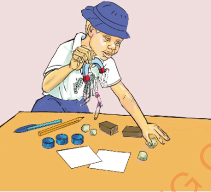

3. Prepare a table and list the names of the objects that were attracted and names of the objects that were not attracted by a magnet.
Magnetism is the ability of magnet to attract or repel objects. The magnets use this ability to attract iron-related materials towards them. Thus, a magnet is a device that has the ability to attract objects made of iron-related materials. Each magnet has two poles. These poles are the North (N) and the South (S) poles. Magnets produce the magnetic field. The magnetic field is a region around the magnet where magnetic forces can be felt. The magnetic force is what causes materials to be attracted or repelled by a magnet. Therefore, magnetic force is the push or pull caused by magnetism. Also, magnetic force is represented by imaginary lines called magnetic lines of force which can be visualised when you sprinkle iron filings around a bar magnet. The filings arrange themselves in a specific pattern and forming lines.
Shapes of magnets
Search for information about the shapes of magnets from the library or reliable online sources.
Write down your findings.
Magnets have various shapes depending on their uses. These are horseshoe magnets, cylindrical magnets, U-shaped magnets, bar